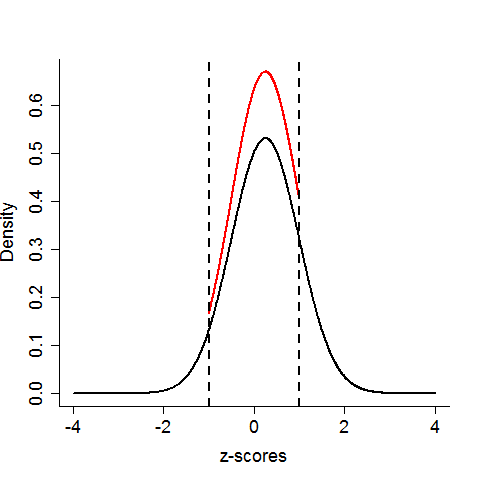
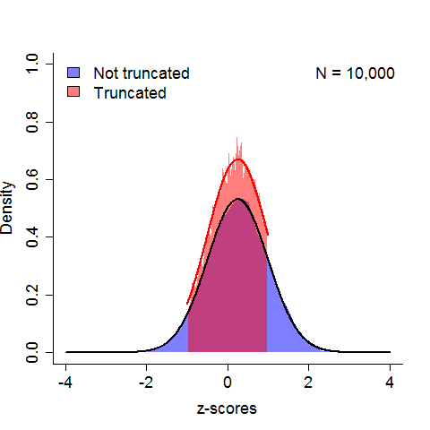

A truncated normal distribution refers to a normal distribution that has been bounded between a pair of limits (a,b). In other words, no values less than a or greater than b can be observed. The typical method of sampling (the inverse probability transform) can be overly inefficient and under-sample from the tails, so several more effective algorithms have been developed.
This post is not about that.
I needed to draw random samples from a truncated normal in order to carry out some predictive checks for a statistcal model. Due to time constraints and the limitations of my coding skills, I needed an extremely easy implementation, not an efficient or optimally effective one. My question, therefore, was whether I could get away with a resampling technique - drawing samples from the untruncated normal distribution and simply redrawing samples that exceed the limits. I am sure this could be determined either via a literature search or some mathematical exploration, but again, because of time and the limits of my abilities, I wanted an easier approach.
I therefore wrote a quick script in R checking whether the resampling technique would conform to the true truncated density. I was only interested in how this would work for the limits (-1,1). So in reality, this is a post on using simulations to check assumptions under a very specific context. First, I define a set of parameters for the normal distribution.
# First, we set the mean and standard deviation the normal distribution.
prm = c( 0.25, 0.75 )
The following plot nicely demonstrates how truncating a normal distribution (any distribution, in fact) redistributes the probability mass.

Next, we'll sample 10,000 observations from a normal distribution, and match this number of observations using the resampling technique for the truncated normal:
# As a sanity check for the resampling technique:
N = 10000 # Number of samples for Monte Carlo integration
orig = rnorm( N, prm[1], prm[2] )
# Resample until all draws lie within the truncation
trunc = rnorm( N, prm[1], prm[2] )
while( sum( trunc > 1 | trunc < -1 ) > 0 ) {
sel = trunc > 1 | trunc < -1
trunc[sel] = rnorm( sum(sel),prm[1],prm[2] )
}
Plotting the results, we see that the estimated density for the original normal distribution is quite smooth. The estimated density for the truncated normal is noisier, but the estimate does correspond to the true density shown in red. Phew!

Here's the code to generate the plot:
# Histograms of the normal and truncated normal draws
e1 = hist( orig, breaks = 40, plot = F )
e2 = hist( trunc, breaks = 40, plot = F )
# x11()
# Determine the height of the plot
yl = lowerUpper(.25,c(e1$density,e2$density))
plot( c(-4,4), c(0,yl[2]), type = 'n', bty = 'l',
xlab = 'z-scores', ylab = 'Density', cex.axis = 1.5,
cex.lab = 1.5 )
# Untruncated
polygon( c( min(e1$mids), e1$mids, max(e1$mids) ),
c( 0, e1$density, 0 ),
border = NA, col = rgb( 0, 0, 1, .5 ) )
# Truncated
polygon( c( min(e2$mids), e2$mids, max(e2$mids) ),
c( 0, e2$density, 0 ),
border = NA, col = rgb( 1, 0, 0, .5 ) )
# True densities
lines( orig_x, d, lwd = 2 )
lines( trunc_x, dt, col = 'red', lwd = 2 )
# Legend
legend( 'topleft', c('Not truncated','Truncated'),
fill = c( rgb(0,0,1,.5), rgb(1,0,0,.5) ),
bty = 'n', cex = 1.5 )
legend( 'topright', c('N = 10,000'), bty = 'n', cex = 1.5 )